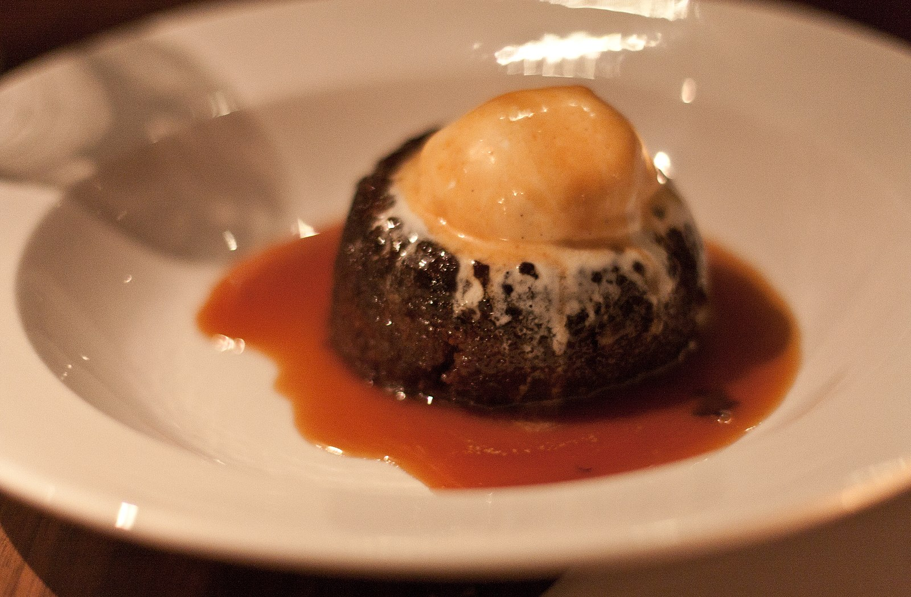

Sticky date pudding

Sticky date pudding is a beloved British dessert that is rich, moist, and utterly indulgent. It consists of a
dense, spongy cake made with finely chopped dates, giving it a subtle sweetness and a deep, caramel-like flavor.
The pudding is traditionally served warm, bathed in a decadent toffee or butterscotch sauce that soaks into the
cake, creating a wonderfully gooey and comforting texture. A dollop of vanilla ice cream or a generous pour of
fresh cream is the perfect accompaniment, providing a cool contrast to the warm, sweet dessert. It's a classic
crowd-pleaser, perfect for a cozy night in or as a show-stopping finale to a dinner party.
Ingredients
For the pudding
- 1 cup (150g) dried dates, pitted and finely chopped
- 1 teaspoon bicarbonate of soda (baking soda)
- 1 ½ cups (375ml) boiling water
- 1 ¾ cups (250g) all-purpose flour
- 1 teaspoon baking powder
- ½ teaspoon salt
- ½ cup (115g) unsalted butter, softened
- 1 cup (200g) caster sugar (superfine sugar)
- 2 large eggs, at room temperature
- 1 teaspoon vanilla extract
For the toffee sauce
- ½ cup (115g) unsalted butter
- 1 cup (200g) brown sugar, packed
- 1 cup (250ml) heavy cream
- 1 teaspoon vanilla extract
- A pinch of salt
Method
- Prepare the Dates: Preheat your oven to 350°F (175°C). Grease and flour an 8x8 inch
(20x20cm) baking dish or a 2-quart (2-liter) round baking dish. In a medium-sized bowl, combine the chopped
dates and bicarbonate of soda. Pour the boiling water over the mixture and set it aside to cool for at least
15 minutes. The dates will soften and the mixture will darken.
- Mix the Dry Ingredients: In a separate bowl, whisk together the flour, baking powder, and
salt. Set aside.
- Cream the Butter and Sugar: In a large bowl using an electric mixer, beat the softened
butter and caster sugar on medium-high speed until light and fluffy, about 3-5 minutes. Beat in the eggs one
at a time, ensuring each is fully incorporated before adding the next. Stir in the vanilla extract.
- Combine the Mixtures: With the mixer on low speed, alternately add the flour mixture and
the date mixture to the butter mixture, starting and ending with the flour. Mix until just combined; be
careful not to overmix. The batter will be quite wet.
- Bake the Pudding: Pour the batter into your prepared baking dish and smooth the top. Bake
for 40-50 minutes, or until a skewer inserted into the center comes out clean.
- Make the Toffee Sauce: While the pudding is baking, prepare the toffee sauce. In a small
saucepan over medium heat, melt the butter. Add the brown sugar and stir until it dissolves and begins to
bubble. Pour in the heavy cream and whisk continuously until the sauce is smooth and slightly thickened.
Stir in the vanilla extract and a pinch of salt. Remove from heat.
- Serve: As soon as the pudding comes out of the oven, use a skewer to poke several holes in
the top. Pour about half of the warm toffee sauce over the pudding, allowing it to soak in. Let the pudding
sit for 5-10 minutes. Serve warm, either directly from the dish or by inverting individual portions onto
plates. Drizzle generously with the remaining warm toffee sauce and serve with vanilla ice cream or fresh
cream.
Home